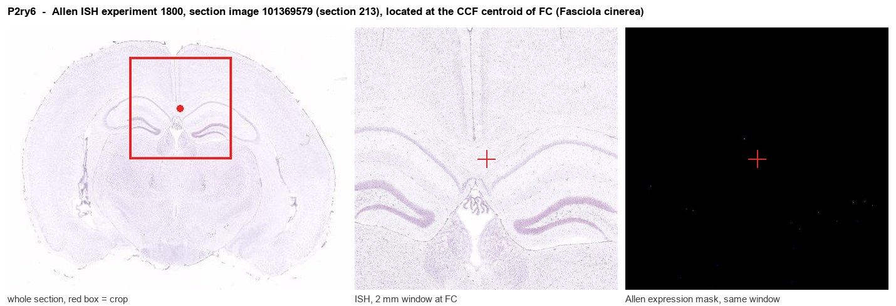
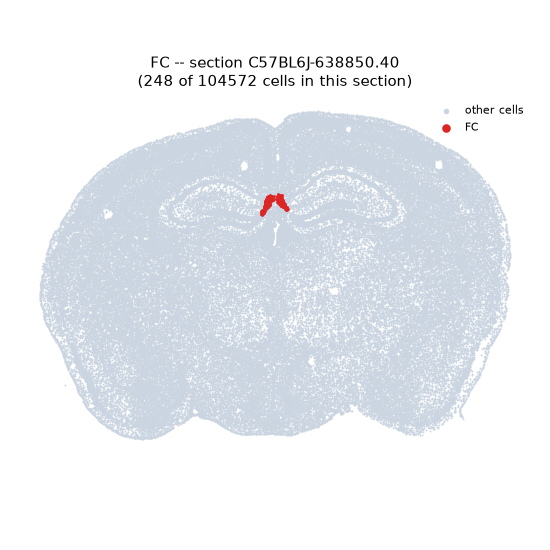
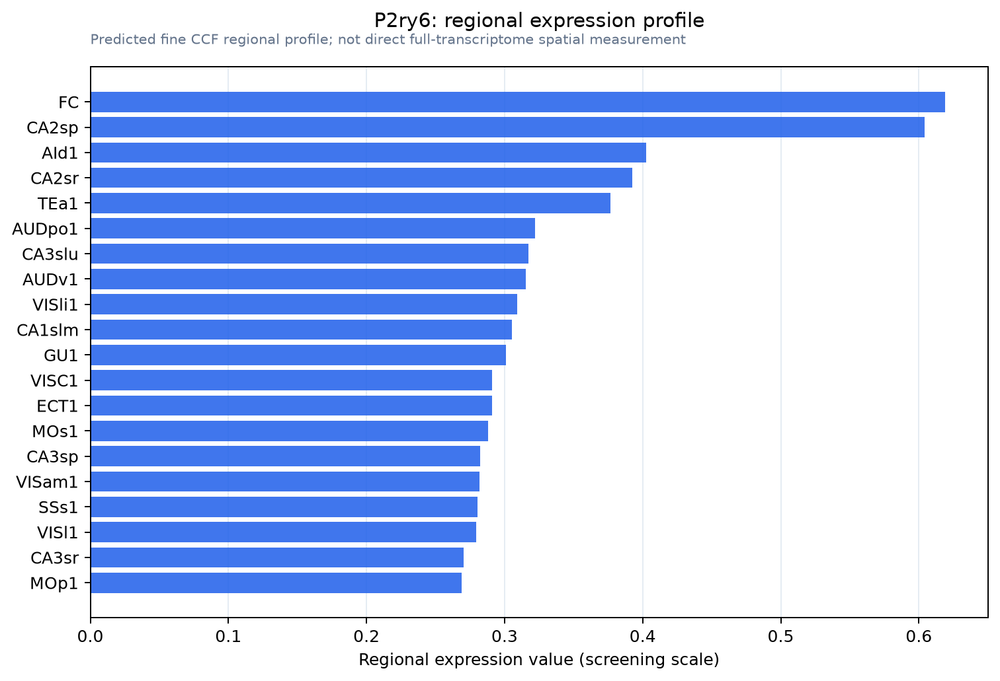

P2ry6
P2Y purinoceptor 6 (P2Y6)
Spatial tier: RESTRICTED · Class: GPCR · Top region: FC (Fasciola cinerea) · Positive regions: 27/554
47.4Discovery Score
36.7Targetability Score
CEvidence grade C
What this means: P2ry6: fine CCF profile is restricted toward FC (top regions: FC, CA2sp, AId1, CA2sr, TEa1; 27 positive regions); direct spatial validation is still required.
Function in FC: evidence, prediction, innovation
- Gene function
- P2RY6 is a Gq-coupled purinergic receptor selective for the nucleotide UDP rather than ATP. Activation drives phospholipase C, IP3-mediated calcium release and protein kinase C signalling. In the central nervous system it is the canonical microglial phagocytic receptor: UDP released or exposed by stressed neurons acts as an eat-me signal that recruits microglial processes and triggers engulfment.
- Region function
- The fasciola cinerea is a small, cytoarchitectonically distinct dentate/CA2-like extension of the hippocampus that curves over the caudal corpus callosum toward the indusium griseum; it is one of the least characterised hippocampal subfields and is thought to participate in the hippocampal-retrosplenial continuum.
- Published in this region
- inferred No region-specific literature found. P2Y6 is expressed by microglia throughout the hippocampal formation, where Koizumi et al. 2007 first showed UDP-P2Y6 signalling drives microglial phagocytosis, Dundee et al. 2023 showed P2Y6-dependent microglial engulfment of hippocampal synapses during development sets synapse density, and Umpierre et al. 2024 showed microglial P2Y6 calcium signalling shapes neuroimmune responses in epileptogenesis; none of these studies resolved the fasciola cinerea specifically.
- Predicted function
- Prediction: in the fasciola cinerea, a dentate-like subfield that retains markers of ongoing plasticity and sits at the interface with the indusium griseum, P2Y6-expressing microglia are predicted to perform continuous UDP-guided pruning of granule-like cell synapses, keeping this small, highly plastic field structurally stable. Microglia-restricted P2ry6 deletion using Cx3cr1-CreER is predicted to increase spine and synapse density selectively in fasciola cinerea and adjacent CA2, reduce microglial process convergence on damaged terminals, and impair the pattern-separation-like component of contextual discrimination; the antagonist MRS2578 delivered locally should acutely halt engulfment.
- Innovation
- ★★★★★ 5/5 The fasciola cinerea is one of the least studied hippocampal subfields and no purinergic or microglial work has addressed it, yet all the mouse genetic and pharmacological tools transfer directly from mainstream hippocampal studies.
- Tools
- P2ry6 knockout mice and the P2ry6-CreERT2 line used by Umpierre et al. 2024; agonists UDP and MRS2693; antagonist MRS2578; Cx3cr1-CreER and Tmem119-CreER for microglial restriction; anti-P2Y6 antibodies; two-photon imaging of microglial engulfment.
- References
Direct evidence located at the region

Allen ISH experiment 1800, section image 101369579 (section 213): the section that contains the CCF centroid of Fasciola cinerea according to the Allen image-to-atlas alignment (reference_to_image), with a 2 mm window around that point. Left: whole section, red box = window. Middle: ISH signal. Right: Allen's expression-mask view of the same window. open this image in the Allen viewer
Look it up yourself: Allen Mouse Brain ISH for P2ry6Allen reference atlas: FC (structure 982)ABC Atlas MERFISH viewer(in the ABC Atlas choose dataset MERFISH-C57BL6J-638850-CCF, colour cells by gene "P2ry6" or by parcellation_substructure "FC")All genes confined to FC + 3-D brain
Direct spatial evidence
MERFISH REGION LOCATOR

Regional expression figure

Predicted WMB × fine-CCF profile; not direct full-transcriptome spatial measurement.
Spatial profile
Evidence and specificity
- Evidence status
- PREDICTED_FINE
- Direct sources
- None; predicted localization only
- Exclusive threshold
- 12 positive regions out of 554
- Spatial specificity
- 0.309
- Top-region fraction
- 0.057
- Filter status
- PASS
Interpretation limits
- Cell-type-to-region projection is imputed expression, not direct spatial measurement.
- Adult reference atlases do not establish stability across age, sex, strain, state, or disease.
- Transcript abundance does not guarantee protein abundance or genetic-tool performance.